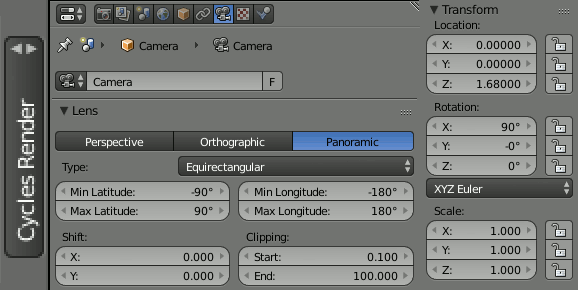
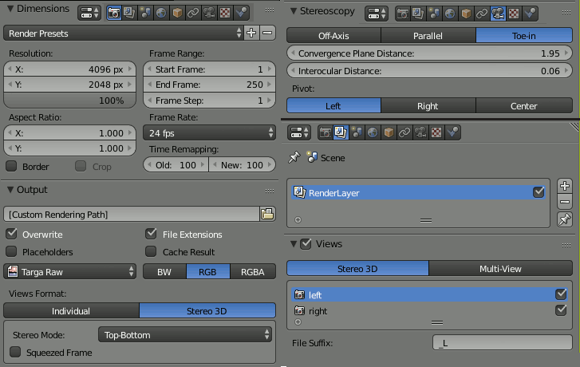
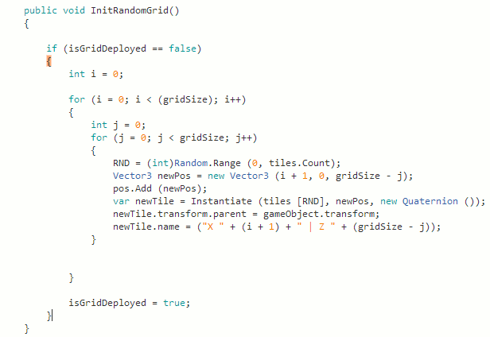
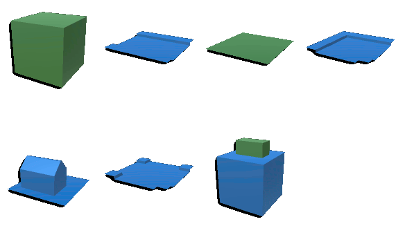
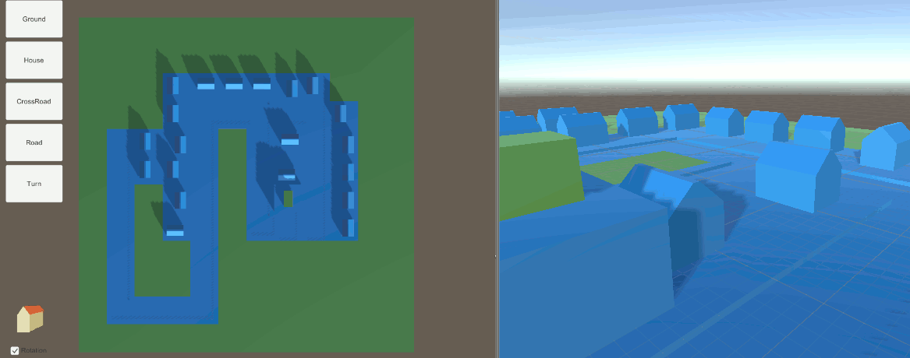

| So I made this video during last october for some guy who's somewhat doing VR stuff, but he ended up being not respectful |
| at all, so I (quickly) patched his logo, but well this blog isn't about complaining, I'm here to talk about the making of process, mainly how to set up a 360 render in Blender. |
 |
| First of all, you'll have to set your rendering engine to Cycles, which will add the "Equirectangular" panoramic type to your camera settings. |
| Then you'll have to set your camera to position z = around 1.7 and rotation x or y = 90°. You can then rotate your cam around the global z |
| to aim at a specific location. Note that your renderings could end up being very long so be sure to optimise your scenes as much as you can. In my video |
| example I actually optimised my scene almost as if it was meant to be runned at real-time : low poly buildings, almost all objects fitting on a single material, etc... |
| I also had some issues as finding things wrong after completing days long rendering times. My solution was to patch only parts of the image, which required |
| re-rendering those parts. Using the camera's min and max longitude values, you can set the engine to render a smaller part of your scene, which introduces |
| my second figure about rendering and stereoscopy : |
 |
| It is very important that your rendering resolution matches the proportions of x = (2*y), otherwise you'll end up with a completely distorted picture. |
| Unless if you actually changed the values of min/max longitude and/or latitude, as those will spread over your entire rendering resolution. As I said it is very usefull |
| for patching things, but you'll have to use offsets later in the sequencer, which can some time be a bit troublesome as angles do not translate well to pixels. |
| That's why I ended up using vertical strips as patches, it's a fast and easy way to find the x position they should be. Note that with a bit more mastery |
| it is possible to use this to refresh only the parts of the image you want to be refreshed, which can help saving days of rendering time on a 360 video animation. |
| If you want to create a stereoscopic content be sure to check the Views checkbox in the Scene panel, it'll add the Stereoscopy parameters to your camera |
| settings. Stereoscopical 360 rendering must be set to toe-in, then set the Convergence plane distance between around 2 and 15, it actually depend on where your |
| focal points are, but beware : changing it during a video playback feels very unnatural. The default interocular distance should work fine on almost every sets |
| if your on a 1m = 1unit scale, but you may actually want to try other values. Lastly you should set your views format to Stereo3D if you're working on a stereo art, |
| top-bottom is the way to go for VR headsets, while anaglyph refers to our beloved red-cyan glasses and such. Also be sure to render as an image format, even if |
| you're working on an animation, the reason for that is that your rendering times can be really long, as an image sequence you can pause it or having it crash and your progress will be saved. |
| Once your image sequence has rendered you can now encode it as a video file. |
| I was kind of proud yesterday to complete a C# square grid generator which instantiated meshes from a gameobjects list. |
| Here's how it worked : |
|  |
| So gridSize is a public Integer variable which determines both x and y size of the grid. |
| Using a for loop, i increments on each loop. On each i incrementation, a new loop is launched which |
| also cycles until j reaches gridSize. Requesting a value of 3 for gridSize results in getting those |
| values : first cycle : i = 0, j = 0,1,2 | 2nd : i = 1, j = 0,1,2 | 3rd : i = 2, j = 0,1,2 || |
| Using the second for loop allow us to store those values as Vector3 to instantiate our tiles right after. |
| I'm using i + 1 and gridSize - j as Vector3.x and Vector3.z respectively. |
| Today I replaced the defaultTile with a tile instantiator script which destroys the current tile when it is fed a new one. |
| So I had to model a few placeholder tiles : |
|  |
| Then I played around with the DragTransform script by Tobias.J found here in the comments to make it work with my newTile instancing system. |
| The new instancing system involves selecting an object by clicking on a button and handling it to any tile on the grid to be instantiated. |
| The buttons are using a ButtonScript public variable which copies it's content onto a similar GameObject variable in the CursorScript. |
| The CursorScript then delivers the stored GameObject to the tile instantiator via the modified DragTransform, |
| using a set of if conditions and booleans to ensure that I could do both Click and Drop and Drag and Drop. |
| Last thing I did was to add a 90° rotation increment system and switching the ButtonScript's GameObject handler to a List |
| which allow me to add some variety and could introduces tile types and my *probably upcoming* saving system. |
| Here's what a 'complete' map looks like : |
|  |